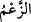
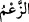
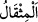
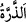

28. Biz seni bütün insanlara ancak müjdeleyici ve uyarıcı olarak gönderdik; fakat
insanların çoğu bunu bilmezler.
29. Eğer sözünüzde doğru iseniz bu vâdettiğiniz (kıyâmet) ne zaman kopacak?
derler.
30. De ki: Size öyle bir gün vâdedilmiştir ki, ondan ne bir saat geri kalabilirsiniz,
ne de ileri geçebilirsiniz.
Ey Muhammed, müşriklerin bulundukları halin bâtıl olduğunu ortaya koymak ve onları
susturmak için “(Müşriklere) de ki: “Allah’tan başka” O’nun yerine “tanrı
saydığınız” tanrı olduklarını iddia ettiğiniz “şeyleri çağırın!” onlara seslenin.
el-Kâmûs’ta der ki: “ hak, bâtıl ve yalan söz için kullanılır. Zıt mânâlı bir
kelimedir. Çoğunlukla hakkında şüphe edilen hususlarda söylenir. el-Müfredât’da der
ki: “ yalan ihtimali olan sözü aktarmaktır. Bunun için Kur’an’da her yerde böyle
söz söyleyenler yerilmiştir.
Yâni eğer iddiânız doğruysa, sizin için önem arz eden fayda sağlama, zararı bertaraf
etme gibi hususlarda Allah’tan başka taptıklarınızı çağırın, belki size icâbet ederler!
Sonra Allah Teâlâ cevabın belli olduğunu hissettirerek cevap verip -ki Allah kendisine
büyüklük taslanmasını kabul etmez- onların hâlini beyan etmek üzere şöyle buyurdu:
“Onlar ne göklerde ne de yerde” yâni hiçbir hususta hayır ve şerden, fayda ve
zarardan “zerre ağırlığınca bir şeye sahiptirler.”
“ ve “ kelimelerinin mânâsı bu sûrenin başlarında geçmişti.
Göklerin ve yerin zikredilmesi, örfen genel bir mânâ ifâde etmesi içindir. Yâni örf
ehli “muhâcirler ve ensar” sözüyle sahâbenin tamamını kasdettikleri gibi ‘gökler ve yer’
sözü ile tüm varlıkları murad ederler. Yahut müşriklerin bazı ilahları melekler ve
yıldızlar gibi gökle ilgili, bazıları da putlar gibi yerle ilgilidir. Ya da hayır ve şerrin
yakın sebepleri gökle ve yerle ilgilidir.
“Onların” yâni ilâhlarının “buralarda” göklerde ve yerde yaratma, mülk ve tasarruf
bakımından “hiçbir ortaklığı yoktur, Allah’ın da onlardan” onların ilahlarından
göklerin ve yerin işlerini idâre etmede “bir yardımcısı yoktur.” Hulâsa Allah Teâlâ
bütün yarattıklardan müstağnîdir. Müşriklerin ilahları ise her şeyden âcizdir.
Mesnevî’de der ki:
Başka bir sahip yoktur yarattıklarına.
Helâk olacaktan başkası ortaklık iddiâ edebilir mi O’na?
O’nun zâtı yardımcıdan müstağnîdir.
Halbuki her padişah O’ndan yardım bekler.